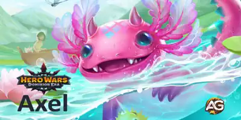
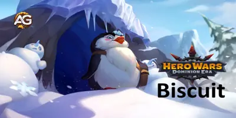
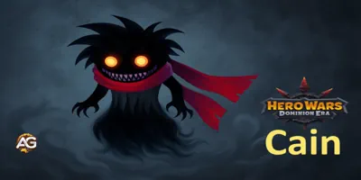
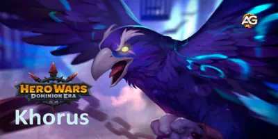
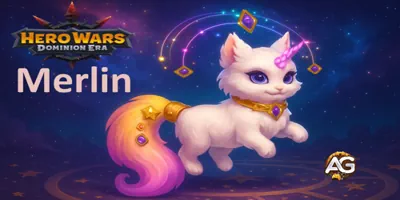
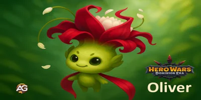

Guia do Pet Axel para Hero Wars: Dominion Era
Guia do Pet Biscuit para Hero Wars: Dominion Era
Guia do Pet Cain para Hero Wars: Dominion Era
Guia do Pet Khorus – Hero Wars: Dominion Era | Atributos, Função e Como Usar
Guia do Pet Merlin para Hero Wars: Dominion Era
Guia do Pet Oliver para Hero Wars: Dominion Era